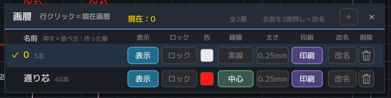

日本語 English
11. 画層と線種
いまは、この用事だけを出しています。 この章をぜんぶ見る
画層とは
図形を乗せる、透明なフィルムです。壁は壁の画層、寸法は
寸法の画層に乗せると、見せ隠しや色替えが一括でできます。
LA / 画層パネル

小窓に LA →Enter（リボンからも開けます）。
- 行をクリック＝現在画層に（これから描く図形が乗る紙）。
- 目玉＝表示／非表示（現在画層は隠せません）。
- 鍵＝ロック（選択も編集もできなくなる守り）。
- 色＝クリックで色の棚。線種＝クリックで線種の棚。
- 太さ＝線の太さmm（画面はズームに正直・紙は本当のmm）。
- ＋＝新しい画層。名前は「この板の中の欄」に打ってEnter（改名も同じ＝名前の席がそのまま欄に変わります）。Esc＝やめる。欄の外を押した時は「決定」です。
- 名前を2度押し（ダブルクリック）でも改名の欄が開きます＝文字をダブルクリックで直すのと同じ癖。「改名」も残してありますので、押しやすい方でどうぞ。
- ゴミ箱＝削除。空でも図形が乗っていても、必ず一度問います。（右上の×は「板を閉じる」だけ＝画層は消えません）。画層0と現在画層は消せません（本家と同じ掟）。
- 並べ替え＝見出しの「名前」を押すと、並べ方を選べます（作った順／名前順 A→Z／名前順 Z→A）。左上の▼の一覧も同じ順。並べ替えは見せる順番だけ＝保存する図面の中身は変わりません。
画層の三人組
- LAYCUR＝選んだ図形を、現在画層へ引っ越し。
- LAYMCUR＝選んだ図形の画層を、現在画層にする（図形は動かず、こちらの足場が移る）。「この壁と同じ画層に描き足したい」の最短手です。
- SETBYLAYER＝個別の色・線種の札を剥がして、画層に従わせる。「画層の色を変えたのに変わらない」の薬です。
どの子も右クリックメニューに居ます。
線種
- LT DASHED＝現在画層の線種を替える。LT ?＝品揃え。
- LTS 10＝破線の目盛り（倍率）。LTS 自動＝紙の上のピッチを縮尺に合わせて保つ、おまかせ。
- 「線種・寸法・文字」の帯（リボンの下）の【破線】の欄でも同じ目盛りをその場で打てます（◀▶＝半分／二倍・自動＝紙基準。右上に「紙で何mm」が出ます）。
- LTDEF 名前 12,-3,0,-3＝自作線種の登録（＋＝進む・−＝休む・0＝点。この例は一点鎖線）。自作は蔵にも納まり、どの図面の棚にも並びます。
この手引きの文は、K'Ad蔵人の中の教本（メニューバー「ヘルプ」の【教本】）と同じものです。
教本を直せば、この手引きも同じ日に直ります。
絵は Windows 版の画面です（2026年11月に撮り直しました）。Mac 版では、Ctrl が ⌘、Alt が ⌥ になります。
教本を直せば、この手引きも同じ日に直ります。
絵は Windows 版の画面です（2026年11月に撮り直しました）。Mac 版では、Ctrl が ⌘、Alt が ⌥ になります。